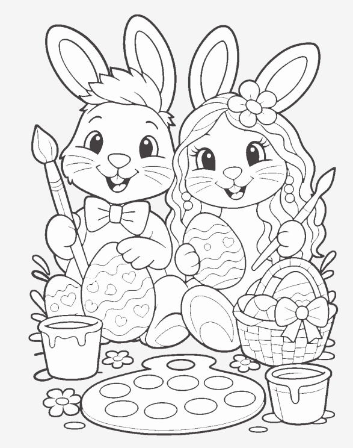
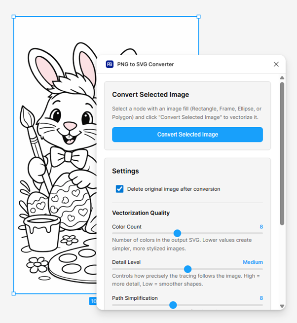
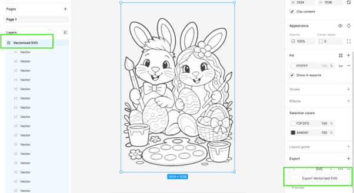
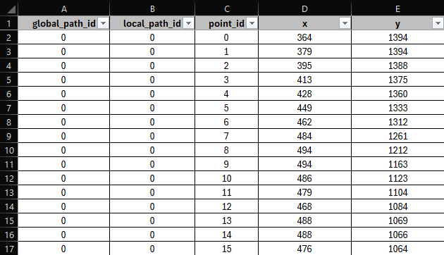
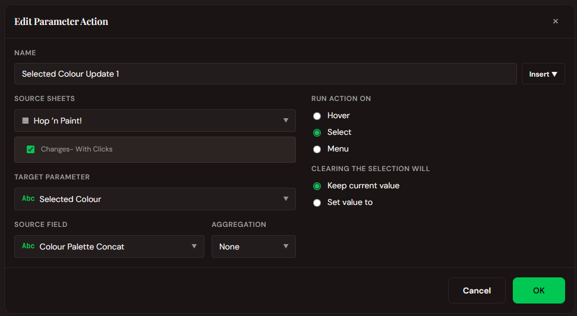
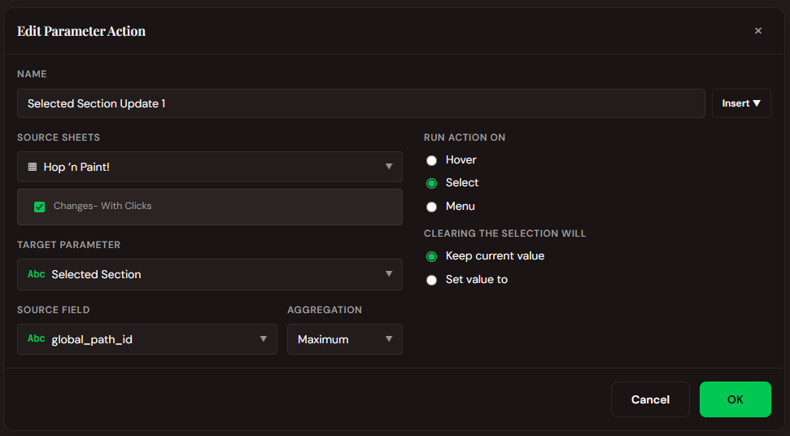
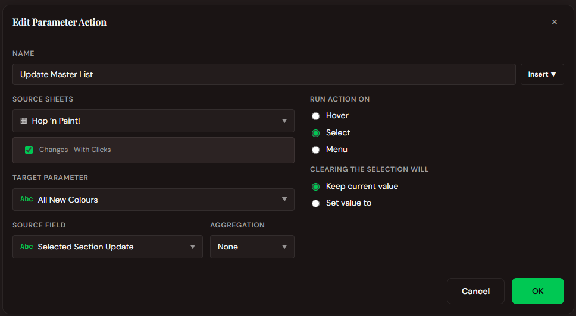
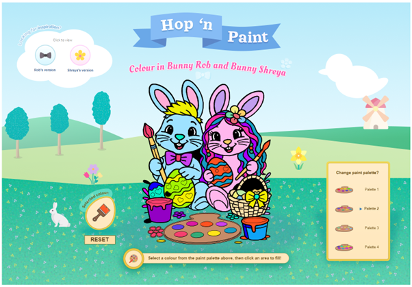

How To Create A Paint By Numbers In Tableau
So the first question is why would you want to create a paint by numbers in Tableau? And it's a good one. The short answer is I wanted to do a collaboration viz with Shreya and she suggested the idea. From there it escalated quickly to could we actually do it and how much fun would it be to do. Below I am going to walk you through the process of how we created the viz and the challenges of some of the technical aspects that were required to get it working.
Step 1: Create The Image
The easy part was done, we had decided on an idea, now we had to bring it to life. We turned to ChatGPT to help us create a fun image based on a photo of the two of us from DataFam Europe. We asked it to create a fun Easter themed image that could be used as a paint by numbers image. After a couple of spectacular failures we managed to get the prompt just right and our Easter bunnies image was ready for the next step.

Step 2: Create The SVG
The next step was to create the SVG file that would be used to create the paint by numbers image. To be able to allow the user to select certain areas on the image and assign colours to it we were going to need each section as its own shape so that we could use polygons within Tableau. Handily there is another tool that helps us do this very easily within Figma. Any image on the canvas can be converted to an SVG file with the PNG to SVG Converter in a few easy steps. The result is a vectorized SVG file which can then be downloaded.


Step 3: Make The Polygon Data
Now that we had the SVG file we needed to find a way to pull path geometry out of it as text, then sample and simplify points into a table Tableau can read. We created a Python script to do this for us. Below is the exact code we used to pull the data out of the SVG file with X and Y coordinates for each point.
Code block 1: Notebook Dependencies
%pip install svg.path
%pip install rdp
What this does: %pip installs packages into the cluster’s Python environment so
we can parse SVG path strings (svg.path) and simplify polylines (rdp, Ramer–Douglas–Peucker).
Code block 2: Extract d Attributes
import re
# Put your SVG content here (as a string)
svg_file_content = """<path d="M364 142H364.25H378.75H379V143H379.25H382.75H383.........Shortened for brevity.............stroke-width="2"/>""" # You can simply paste your SVG file with multiple <path> elements
# Extract all path strings from the file
path_strings = re.findall(r'd="([^"]+)"', svg_file_content)
What this does: Paste your exported SVG (or a fragment) into the string, then
re.findall collects every d="…" value into path_strings for the parser in the next cell.
Code block 3: Sample Paths And Build The DataFrame
What this does: Each SVG path is split into subpaths, converted to many (x, y) samples,
Y is flipped to a bottom-left style coordinate system, rdp reduces noise, and rows are tagged with
global_path_id, local_path_id, and point_id for Tableau polygons.
Step 4: Bring The Data Into Tableau
We finally have our data for all the shapes within the image. We can now bring it into Tableau and start to create the paint by numbers image. Simply bring in your data as a new worksheet and start creating your calculations. As we started to build we did find the python script hadn't been perfect and we had some issues with extra shapes and things we didn't need. As a result there was a bit of data cleansing that went into this stage.

Step 5: The Calculations!
OK, the data is in Tableau and we have started to create the calculations, parameters and actions to make it all work. There were a few fairly straightforward things but below I will walk you through the key calcs and actions that made the interaction really pop for the user. First up we needed to normalise our X and Y coordinates to be between 0 and 1 so that we could use them with Map Layers.
X (Normalised)
This calculation simply divides the X coordinate by the maximum X coordinate to get a value between 0 and 1. This is repeated for the Y coordinate, which is then used to create the Map Layer.
[X]/ {MAX([X])}MP- Lines (Others)
This calculation uses the MAKEPOINT function with the normalised X and Y coordinates to allow us to plot the points on the map layer. We filtered for >1 to exclude the background shape.
IF [global_path_id] > 1 THEN
MAKEPOINT([X (Normalised)],[Y (Normalised)])
ENDSelected Section Update
This calculation updates the string of colour assignments in
[All New Colours]. If the current path ID already exists in the string, it replaces that entry; if not, it appends a new one.
Tip: click a highlighted line on the left to show the Line Notes.
Condition check
Does this path ID already exist in the string?
IF CONTAINS([All New Colours], "|" + STR([global_path_id (Clickable)]) + ":")
This tests whether [All New Colours] already contains an entry for the current path. The delimiter pattern
|pathID: is how entries are identified. Each entry looks like |42:red|, so searching for
|42: uniquely locates that path (the leading pipe avoids a partial match on an ID such as 142).
STR() turns the numeric path ID into text so it can be concatenated into the search pattern.
THEN: Remove old segment
When the path already exists, strip out its current colour, then you will append the replacement (see note 3). First, everything
before this path's entry:
LEFT([All New Colours], FIND([All New Colours], "|" + STR([global_path_id (Clickable)]) + ":") - 1)
— LEFT(..., position - 1)
keeps all text up to (but not including) the |pathID: marker, preserving every
entry that came before the one being replaced.
That is concatenated with everything after the old entry: the nested MID / FIND block finds the next
| after the segment start (inside the old value), then takes the substring from that closing pipe to the end of the string i.e. all
entries that followed the removed segment.
- Outer
FINDlocates the start of this path's entry (|pathID:). - Inner
MIDtakes text starting one character after that, so you are inside the old entry. - Inner
FINDlooks for the next|, which ends the old entry's value. - Adding the offsets gives the position of that closing
|in the full string. MID(..., LEN([All New Colours]))from that point keeps the tail of the string after the deleted entry.
THEN (cont.) Append new entry
After the string from step 2, concatenate
STR([global_path_id (Clickable)]) + ":" + [Selected Colour] + "|"
— rebuilding the token as
pathID:colour| on the cleaned prefix + suffix. Effectively: everything before + everything after + new entry, which replaces the old colour with the new one.
The commented //"|" + line hints that a leading pipe was omitted on purpose: the trailing | from the previous entry already separates segments.
ELSE: Path does not exist yet
Empty string: if LEN([All New Colours]) = 0, use
[All New Colours] + "|" + STR(...) + ":" + [Selected Colour] + "|" so the first entry establishes the leading pipe for the delimited format.
Non-empty: the string already ends with |, so append STR(...) + ":" + [Selected Colour] + "|" directly after
[All New Colours] without an extra leading pipe.
Example format: |12:blue|47:red|99:green| pipe-delimited segments, colon-separated path and colour.
Worked example
[All New Colours] = "|12:blue|47:red|99:green|"
[global_path_id (Clickable)] = 47
[Selected Colour] = orange
-
CONTAINS finds
|47:in the string ✓ → THEN strip the old segment and append the new token. -
LEFT keeps everything before
|47:→"|12:blue|". -
The nested MID / FIND block drops
|47:red|and returns the tail"99:green|". -
Append
STR(47) + ":" + "orange" + "|"→ final[All New Colours]is"|12:blue|99:green|47:orange|"✓
Changed Colour
When the current path already has an entry in [All New Colours], this field pulls out just that path's colour
token. If there is no entry yet, it returns [Start Colour] so the polygon still shows its original fill.
Tip: click a highlighted line on the left to show the Line Notes.
Condition check
Same idea as Selected Section Update: IF CONTAINS([All New Colours], "|" + STR([global_path_id (Clickable)]) + ":")
is true only when the delimited string already has a segment for this path (|pathID:colour|).
If it is false, control skips to ELSE and you use [Start Colour] instead of parsing MID.
MID: source and start position
The outer MID reads from the full [All New Colours] string. Its second argument is where the colour value begins:
FIND(..., "|" + STR(...) + ":") locates the start of this path's token, and + LEN("|" + STR(...) + ":") advances past the entire
prefix including the colon, so the extracted substring starts at the first character of the colour name, not at the pipe or path ID.
MID: length (through next pipe)
The third argument is how many characters MID should return. The inner MID([All New Colours], FIND(...)+LEN(...), LEN([All New Colours]))
takes the tail of the string from the first colour character through the end (everything after pathID: for this entry and all following text).
The outer FIND(..., "|") on that slice locates the next pipe, the delimiter after this path's colour. Subtract 1 so the result
stops before that pipe and returns only the colour token (e.g. blue from |42:blue|).
ELSE: default colour
When this path has not been written into [All New Colours] yet, there is nothing to parse. The calc returns [Start Colour] so the
section keeps its original palette colour until the user paints it.
Worked example
[All New Colours] = "|12:blue|47:red|99:green|"
[global_path_id (Clickable)] = 47
- CONTAINS finds
|47:✓ -
FIND locates
|47:at position 8.LEN(|47:)= 4. Start = position 12 → therinred. - Inner MID produces
"red|99:green|". FIND finds|at position 4. - 4 - 1 = 3 characters to read → MID returns
"red"✓
Colour Palette Concat
This calc is used to combine the selected colour palette and the colour the user wants from the palette. We did this so we could have multiple colour palettes available to the user, which meant MORE colours to paint with!
STR([Colour Palette Select])+"-"+STR([Colour Palette ID])Let's Now Explore The 3 Main Dashboard Actions

Selected Colour Update 1
This action uses the sheet Changes- With Clicks to add the Colour Palette Concat field to the Selected Colour parameter when the user selects a mark. The selected colour is then used to colour the polygon section on the map through the other calculations above.

Selected Section Update 1
This action uses the sheet Changes- With Clicks to add the global_path_id field to the Selected Section parameter when the user selects a mark. The selected id/shape is then used to colour the polygon section on the map through the other calculations above.

Update Master List
This action uses the sheet Changes- With Clicks to add the Selected Section Update field to the Selected Section Update parameter when the user selects a mark. This action drives all the changes and is used to colour the polygon section on the map through the other calculations above.
Step 6: Make It Look Good
Calculations, parameters and actions all complete, now it is time to make it look good.
We added a few simple calculations to the worksheet to make it look a bit more polished and professional.
Then Shreya worked her magic with Figma to bring in a magnificent background and a few other imagery items to really
draw in the user. We also wanted to make the tooltips fun so we hid some 'Easter Eggs' pun intended within the viz,
standardised all text and colours, then did the final checks of all the interactive elements.
Check out Shreya's write-up about this project here: Shreya's Write-Up
Key Lesson: No matter how good your viz looks on Tableau Desktop, always publish to Tableau Public early and make sure everything is working and looks how you expect it to. This has caught me out SO many times.
Step 7: Publish And Have Fun!
You've done all the hard work and now it is time to sit back and admire your completed viz. But one last thing is to have some fun with it yourself, colour it in and save your preset colours so your viewer can get a taste of what they can do at the click of a button.

The Last Thread
Looking back at this build, what stands out is how quickly a playful idea, a collaboration viz with Shreya after DataFam Europe, turned into a small pipeline in its own right. We went from "could we?" to ChatGPT and Figma for the image, then into the less glamorous but essential work: pulling path geometry out of an SVG with Python, flipping and simplifying coordinates, and accepting that the first export would not be the last. Tableau was never only the chart layer here; it became the engine that remembers every colour choice in a single pipe-delimited string, then feeds that state back through normalised map layers, parameters, and actions until the polygons behave the way a paint-by-numbers page ought to.
None of that polish would land without Shreya's pass in Figma: backgrounds, imagery, tooltips with Easter eggs, and
the discipline to standardise text and colour once the mechanics were stable. If you build your own variation, or use this idea anywhere, we would
love to see it. Until then, thanks for following the thread from bunny concept to
published viz, may your paths be closed, your pipes aligned, and your parameter actions fire on the first try.
Rob.